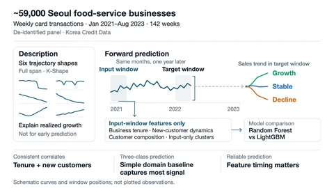

(open full-size image)Small-Business Sales Dynamics: Empirical Patterns and Predictive Modeling
A framework for describing and classifying growth, stability, and decline among about 59,000 Seoul food-service businesses, using a weekly card-transaction panel from January 2021 to August 2023.
Business tenure and new-customer dynamics are consistent correlates of sales states, and a simple domain-feature baseline captures most of the three-class signal.
Details: Small-Business Sales Dynamics: Empirical Patterns and Predictive Modeling
- Problem & questions
- How do small-business sales evolve into growth, stable, and decline patterns? Which customer, business-tenure, and local-market characteristics are associated with those patterns, and what can be predicted from earlier transaction windows?
- Data
- A de-identified Korea Credit Data panel of approximately 59,000 Seoul food-service businesses over 142 weeks, from January 2021 to August 2023. Weekly sales and customer metrics are combined with industry, district, and business-tenure information. Individual model-ready samples vary by observation coverage and panel.
- Technical approach
- Separate descriptive analysis from forward prediction. Use K-Shape for six full-span descriptive trajectory groups and feature-window K-means for forward-valid cluster features. Combine logistic regression, panel fixed-effects analysis, customer-composition features, and tree-based classifiers.
- My responsibilities
- Conducted the master’s research under Prof. Jihee Kim, covering empirical-pattern analysis, feature design, model comparison, interpretation, and thesis writing.
- Implementation
- Align feature and target windows by season; handle gaps and inactive periods; keep stores separate across cross-validation folds; and fit predictive cluster features only on information available in the input window. Compare Random Forest and LightGBM on matched representations. As boundary checks, benchmark 14 non-LightGBM comparison models (foundation models Chronos-Bolt and TimesFM; neural forecasters such as TFT, N-BEATS, and PatchTST; SMB-specific attention variants; and cost-sensitive Random Forest variants) plus a preliminary graph neural network; none outperforms the tabular representation.
- Technologies
- Python; K-Shape and K-means clustering; logistic regression and panel models; Random Forest, LightGBM, and XGBoost; SHAP-based interpretation.
- Findings
- Business tenure and new-customer dynamics are consistent correlates of sales states. A simple domain-feature baseline captures most of the three-class signal. LightGBM shows a modest advantage on the matched comparison; adding forward-valid trajectory clusters brings little incremental gain.
- Limits & takeaway
- The sample covers Seoul food-service card transactions, not the entire small-business economy. Descriptive associations do not establish causality. Full-span trajectory summaries can explain realized growth but are not valid early predictors. Careful feature timing and evaluation design matter as much as the choice of model.
Two tasks, different interpretations
| Task & evaluation | Reported result | Interpretation |
|---|---|---|
| Forward G/S/D classification Six-panel matched comparison | Mean macro-F1: Random Forest 0.4973 LightGBM 0.5048 | A modest +0.0075 difference; statistically significant in 2 of 6 panels at p < 0.05. |
| Substantial-growth identification Single 80/20 holdout | XGBoost binary F1: 0.681 → 0.818 | Adding post-hoc trajectory features improves explanation of realized growth. This is not a forward-prediction improvement. |
The two rows use different targets, metrics, and evaluation protocols and are not directly comparable. Source: Small-Business Sales Dynamics: Empirical Patterns and Predictive Modeling, master’s thesis, 2026.